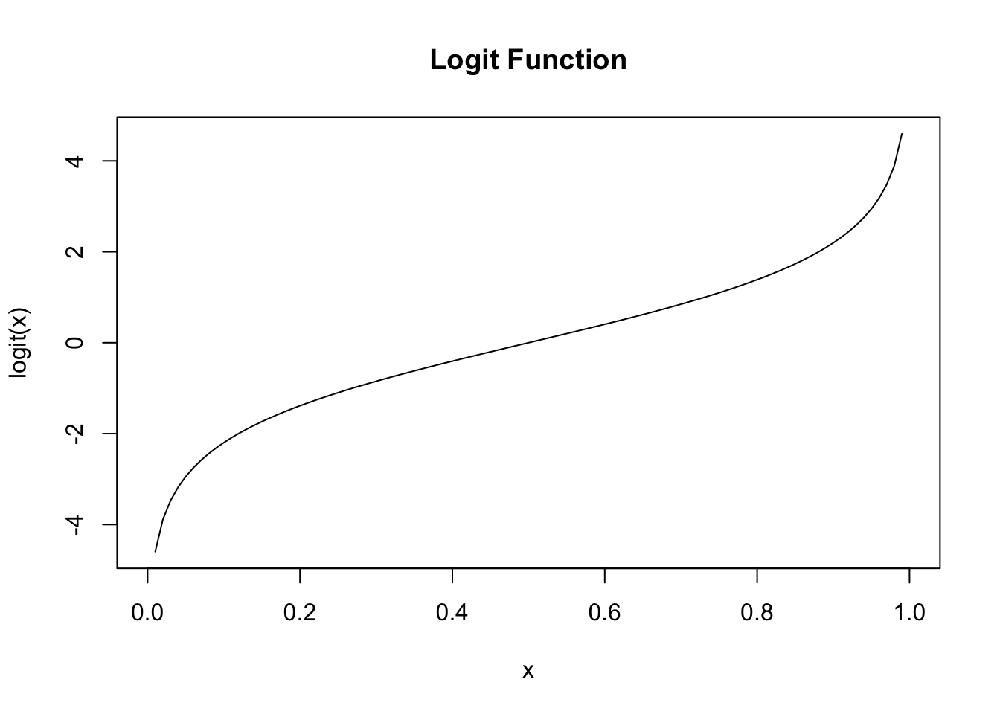
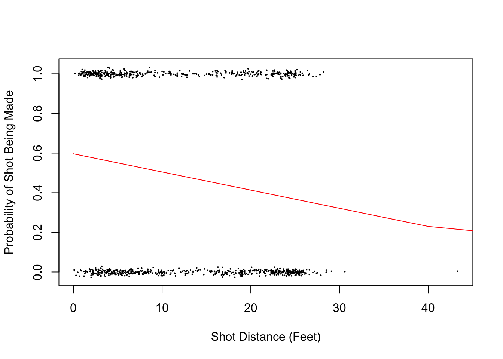
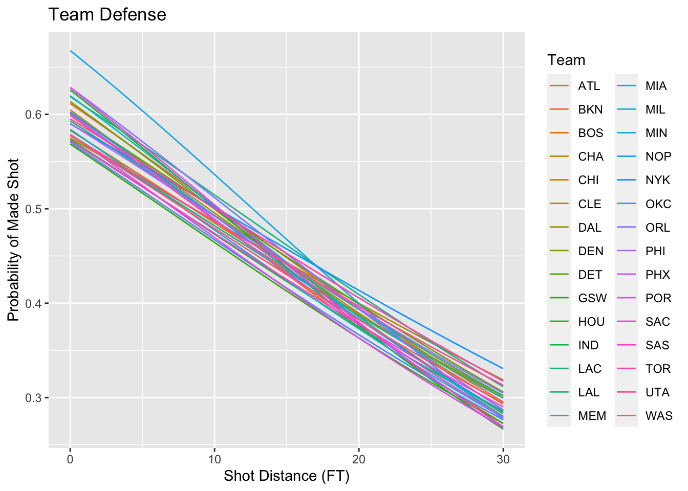
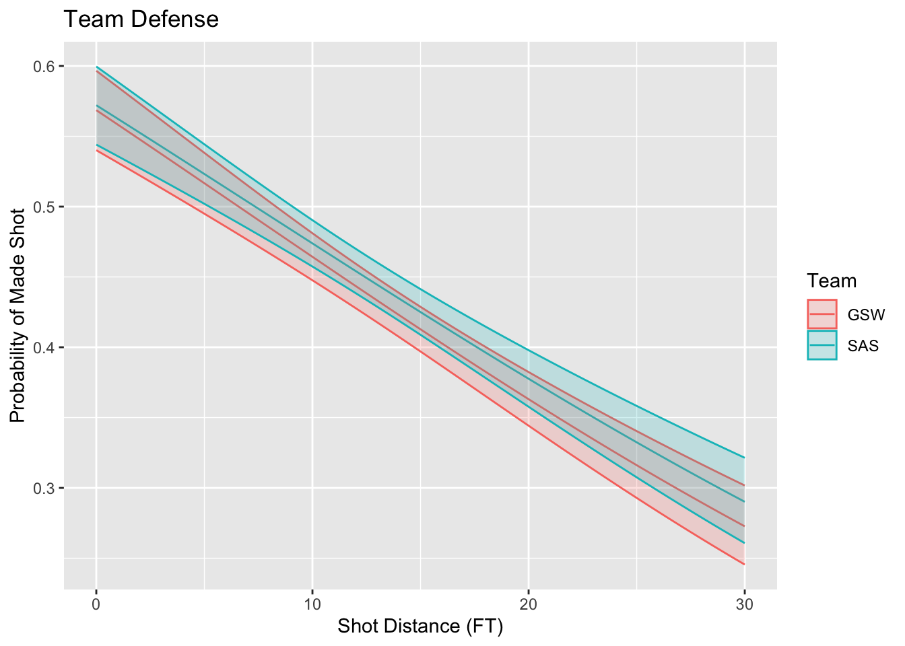

Chapter 18 Logistic Regression
18.1 What is logistic regression used for?
Logistic regression is useful when we have a response variable which is categorical with only two categories. This might seem like it wouldn’t be especially useful, however with a little thought we can see that this is actually a very useful thing to know how to do. Here are some examples where we might use logistic regression.
- Predict whether a customer will visit your website again using browsing data
- Predict whether a voter will vote for the democratic candidate in an upcoming election using demographic and polling data
- Predict whether a patient given a surgery will survive for 5+ years after the surgery using health data
- Given the history of a stock, market trends predict if the closing price tomorrow will be higher or lower than today?
With many other possible examples. We can often phrase important questions as yes/no or (0-1) answers where we want to use some data to better predict the outcome. This is a simple case of what is called a classification problem in the machine learning/data science community. Given some information we want to use a computer to decide make a prediction which can be sorted into some finite number of outcomes.
18.2 GLM: Generalized Linear Models
Our linear regression techniques thus far have focused on cases where the response (\(Y\)) variable is continuous in nature. Recall, they take the form: \[ Y_i=\alpha+ \sum_{j=1}^N \beta_j X_{ij} \] Where \(alpha\) is the intercept and \(\{\beta_1, \beta_2, ... \beta_N\}\) are the slope parameters for the explanatory variables (\(\{X_1, X_2, ...X_N\}\)). However, our outputs \(Y_i\) should give the probability that \(Y_i\) takes the value 1 given the \(X_j\) values. The right hand side of our model above will produce values in \(\mathbb{R}=(-\infty, \infty)\) while the left hand side should live in \([0,1]\).
Therefore to use a model like this we need to transform our outputs from [0,1] to the whole real line \(\mathbb{R}\).
The logit function is useful for this purpose as it maps \(logit: [0,1] \rightarrow \mathbb{R}\). The logit function takes the form: \[logit(x)=\ln \left(\frac{x}{1-x}\right)\]  Thus, we can use our multiple regression techniques if treat our outputs as \(Y_i=logit(p_i)\). This is the basic idea of logistic regression: \[ \begin{aligned} & Y_i=logit(p_i)=\alpha+ \sum_{j=1}^N \beta_j X_{ij} \end{aligned} \] Usually, we want to know \(p_i\) and not \(logit(p_i)\) and we can find this using the inverse logit \(logit^{-1}\). \[ \begin{aligned} & p_i=logit^{-1} \left( \alpha+ \sum_{j=1}^N \beta_j X_{ij} \right) \\ & logit^{-1}(\gamma)=\frac{1}{1+e^{-\gamma}} \end{aligned} \] A logistic regression is one example in a family of techniques called generalized linear models (GLM). GLMs involve a linear predictor function \(\alpha+ \sum_{j=1}^N \beta_j X_{ij}\) and a link function \(g()\) which maps the linear predictor to the response variable.
\[y_i=g \left( \alpha+ \sum_{j=1}^N \beta_j X_{ij} \right)\]
18.3 A Starting Example
Let’s consider the shot logs data set again. We will use the shot distance column SHOT_DIST and the FGM columns for a logistic regression. The FGM column is 1 if the shot was made and 0 otherwise (perfect candidate for the response variable in a logistic regression). We expect that the further the shot is from the basket (SHOT_DIST) the less likely it will be that the shot is made (FGM=1).
To build this model in R we will use the glm() command and specify the link function we are using a the logit function.
logistic.nba <- glm(FGM ~ SHOT_DIST, data = shot_logs_2014, family = binomial(link = "logit"))
logistic.nba$coefficients## (Intercept) SHOT_DIST
## 0.3928408 -0.0427766\[logit(p)=0.392-0.04 \times SD \implies p=logit^{-1}(0.392-0.04 \times SD)\] So we can find the probability of a shot going in 12 feet from the basket as:
invlogit(0.392 - 0.04 * 12)## [1] 0.4780142Here is a plot of the probability of a shot going in as a function of the distance from the basket using our best fit coefficients.
x <- seq(0, 400, 40)
p <- invlogit(0.392 - 0.04 * x)
slplot = dplyr::sample_n(shot_logs_2014, 1000)
plot(slplot$SHOT_DIST, slplot$FGM + rnorm(dim(slplot)[1], sd = 0.01), cex = 0.15,
xlab = "Shot Distance (Feet)", ylab = "Probability of Shot Being Made")
lines(x, p, type = "l", col = "red")
18.3.1 Confidence Intervals for the Parameters
A major point of this book is that you should never be satisfied with a single number summary in statistics. Rather than just considering a single best fit for our coefficients we should really form some confidence intervals for their values.
As we saw for simple regression we can look at the confidence intervals for our intercepts and slopes using the confint command.
library(MASS)
ci1 <- confint(logistic.nba)
print(ci1)## 2.5 % 97.5 %
## (Intercept) 0.3721268 0.41356814
## SHOT_DIST -0.0440923 -0.04146227Note, these values are still in the logit transformed scale.
18.4 Equivalence of Logistic Regression and Proportion Tests
Suppose we want to use the categorical variable of the individual player in our analysis. In the interest of keeping our tables and graphs visible we will limit our players to just those who took more than 820 shots in the data set.
library(dplyr)
lotsShots <- shot_logs_2014 %>%
group_by(player_name) %>%
summarise(num.attempts = n()) %>%
filter(num.attempts >= 820) %>%
arrange(player_name)
knitr::kable(lotsShots, col.names = c("Name", "Number of Shots"))| Name | Number of Shots |
|---|---|
| blake griffin | 878 |
| chris paul | 851 |
| damian lillard | 925 |
| gordon hayward | 833 |
| james harden | 1006 |
| klay thompson | 953 |
| kyle lowry | 832 |
| kyrie irving | 919 |
| lamarcus aldridge | 1010 |
| lebron james | 947 |
| mnta ellis | 1004 |
| nikola vucevic | 889 |
| rudy gay | 861 |
| russell westbrook | 943 |
| stephen curry | 941 |
| tyreke evans | 875 |
Now we can get a reduced data set with just these players.
sl2 <- shot_logs_2014 %>%
filter(player_name %in% lotsShots$player_name) %>%
arrange(player_name)Let’s form a logistic regression using just a categorical variable as the explanatory variable. \[ logit(p)=\beta Player \]
logistic.nba.player <- glm(FGM ~ player_name + 0, data = sl2, family = binomial(link = "logit"))
summary(logistic.nba.player)##
## Call:
## glm(formula = FGM ~ player_name + 0, family = binomial(link = "logit"),
## data = sl2)
##
## Deviance Residuals:
## Min 1Q Median 3Q Max
## -1.234 -1.102 -1.066 1.255 1.323
##
## Coefficients:
## Estimate Std. Error z value Pr(>|z|)
## player_nameblake griffin 0.009112 0.067497 0.135 0.892617
## player_namechris paul -0.063476 0.068594 -0.925 0.354762
## player_namedamian lillard -0.267530 0.066348 -4.032 5.52e-05 ***
## player_namegordon hayward -0.185403 0.069594 -2.664 0.007720 **
## player_namejames harden -0.207501 0.063396 -3.273 0.001064 **
## player_nameklay thompson -0.145060 0.064957 -2.233 0.025537 *
## player_namekyle lowry -0.334824 0.070309 -4.762 1.92e-06 ***
## player_namekyrie irving -0.111104 0.066076 -1.681 0.092672 .
## player_namelamarcus aldridge -0.202671 0.063255 -3.204 0.001355 **
## player_namelebron james -0.023232 0.064996 -0.357 0.720759
## player_namemnta ellis -0.179765 0.063374 -2.837 0.004560 **
## player_namenikola vucevic 0.132929 0.067226 1.977 0.048003 *
## player_namerudy gay -0.193400 0.068478 -2.824 0.004739 **
## player_namerussell westbrook -0.232215 0.065568 -3.542 0.000398 ***
## player_namestephen curry -0.027632 0.065204 -0.424 0.671730
## player_nametyreke evans -0.241162 0.068104 -3.541 0.000398 ***
## ---
## Signif. codes: 0 '***' 0.001 '**' 0.01 '*' 0.05 '.' 0.1 ' ' 1
##
## (Dispersion parameter for binomial family taken to be 1)
##
## Null deviance: 20333 on 14667 degrees of freedom
## Residual deviance: 20211 on 14651 degrees of freedom
## AIC: 20243
##
## Number of Fisher Scoring iterations: 3If we take the inverse logit of the coefficients we get the field goal percentage of the players in our data set.
invlogit(logistic.nba.player$coefficients)## player_nameblake griffin player_namechris paul
## 0.5022779 0.4841363
## player_namedamian lillard player_namegordon hayward
## 0.4335135 0.4537815
## player_namejames harden player_nameklay thompson
## 0.4483101 0.4637985
## player_namekyle lowry player_namekyrie irving
## 0.4170673 0.4722524
## player_namelamarcus aldridge player_namelebron james
## 0.4495050 0.4941922
## player_namemnta ellis player_namenikola vucevic
## 0.4551793 0.5331834
## player_namerudy gay player_namerussell westbrook
## 0.4518002 0.4422057
## player_namestephen curry player_nametyreke evans
## 0.4930925 0.4400000Now suppose we want to see if the players in our data set truly differ in their field goal percentages or whether the differences we observe could just be caused by random effects. To do this we want to compare a model without the players information included with one that includes this information. Let’s create a null model to compare against our player model.
null.player.model <- glm(FGM ~ 1, data = sl2, family = binomial(link = "logit"))This null model contains no explanatory variables and takes the form: \[logit(p_i)=\alpha\]
Thus, the shooting percentage is not allowed to vary between the players. We find based on this data an overall field goal percentage of:
invlogit(null.player.model$coefficients)## (Intercept)
## 0.4645804Now we may compare logistic regression models using the anova command in R.
anova(null.player.model, logistic.nba.player, test = "LRT")## Analysis of Deviance Table
##
## Model 1: FGM ~ 1
## Model 2: FGM ~ player_name + 0
## Resid. Df Resid. Dev Df Deviance Pr(>Chi)
## 1 14666 20259
## 2 14651 20211 15 48.236 2.33e-05 ***
## ---
## Signif. codes: 0 '***' 0.001 '**' 0.01 '*' 0.05 '.' 0.1 ' ' 1The second line contains a p value of 2.33e-5 telling us to reject the null hypothesis that the two models are equivalent. So we found that knowledge of the player does matter in calculating the probability of a shot being made.
Notice we could have performed this analysis as a proportion test using the null that all players shooting percentages are the same \(p_1=p_2=...p_{15}\)
prop.test(table(sl2$player_name, sl2$FGM))##
## 16-sample test for equality of proportions without continuity
## correction
##
## data: table(sl2$player_name, sl2$FGM)
## X-squared = 48.247, df = 15, p-value = 2.32e-05
## alternative hypothesis: two.sided
## sample estimates:
## prop 1 prop 2 prop 3 prop 4 prop 5 prop 6 prop 7 prop 8
## 0.4977221 0.5158637 0.5664865 0.5462185 0.5516899 0.5362015 0.5829327 0.5277476
## prop 9 prop 10 prop 11 prop 12 prop 13 prop 14 prop 15 prop 16
## 0.5504950 0.5058078 0.5448207 0.4668166 0.5481998 0.5577943 0.5069075 0.5600000Notice the p-value obtained matches the logistic regression ANOVA almost exactly. Thus, a proportion test can be viewed as a special case of a logistic regression.
18.5 Example: Building a More Accurate Model
Now we can form a model for the shooting percentages using the individual players data:
\[ logit(p_i)=\alpha+\beta_1 SF+\beta_{2} DD+\beta_3 (player_dummy) \]
logistic.nba2 <- glm(FGM ~ SHOT_DIST + Team.Defending, data = shot_logs_2014, family = binomial(link = "logit"))
summary(logistic.nba2)##
## Call:
## glm(formula = FGM ~ SHOT_DIST + Team.Defending, family = binomial(link = "logit"),
## data = shot_logs_2014)
##
## Deviance Residuals:
## Min 1Q Median 3Q Max
## -1.4073 -1.0754 -0.8976 1.1397 1.7614
##
## Coefficients:
## Estimate Std. Error z value Pr(>|z|)
## (Intercept) 3.727e-01 3.398e-02 10.967 < 2e-16 ***
## SHOT_DIST -4.283e-02 6.717e-04 -63.761 < 2e-16 ***
## Team.DefendingBKN 6.384e-02 4.614e-02 1.384 0.166440
## Team.DefendingBOS -2.066e-05 4.533e-02 0.000 0.999636
## Team.DefendingCHA 7.898e-03 4.594e-02 0.172 0.863503
## Team.DefendingCHI -4.528e-03 4.520e-02 -0.100 0.920194
## Team.DefendingCLE 3.676e-02 4.549e-02 0.808 0.419011
## Team.DefendingDAL 2.845e-02 4.540e-02 0.627 0.530822
## Team.DefendingDEN 4.213e-02 4.580e-02 0.920 0.357672
## Team.DefendingDET 6.149e-02 4.565e-02 1.347 0.177977
## Team.DefendingGSW -8.470e-02 4.570e-02 -1.853 0.063841 .
## Team.DefendingHOU 3.672e-02 4.585e-02 0.801 0.423217
## Team.DefendingIND -4.503e-02 4.624e-02 -0.974 0.330118
## Team.DefendingLAC 3.636e-02 4.556e-02 0.798 0.424814
## Team.DefendingLAL 1.149e-01 4.649e-02 2.472 0.013442 *
## Team.DefendingMEM -3.034e-03 4.650e-02 -0.065 0.947972
## Team.DefendingMIA 5.149e-02 4.676e-02 1.101 0.270751
## Team.DefendingMIL -3.506e-02 4.616e-02 -0.760 0.447538
## Team.DefendingMIN 1.618e-01 4.547e-02 3.559 0.000373 ***
## Team.DefendingNOP 2.170e-02 4.559e-02 0.476 0.634098
## Team.DefendingNYK 8.745e-02 4.644e-02 1.883 0.059700 .
## Team.DefendingOKC -7.212e-02 4.519e-02 -1.596 0.110555
## Team.DefendingORL 8.623e-02 4.558e-02 1.892 0.058496 .
## Team.DefendingPHI 3.377e-02 4.596e-02 0.735 0.462438
## Team.DefendingPHX 4.797e-03 4.494e-02 0.107 0.914992
## Team.DefendingPOR -6.947e-02 4.531e-02 -1.533 0.125231
## Team.DefendingSAC 4.369e-02 4.548e-02 0.961 0.336674
## Team.DefendingSAS -4.109e-02 4.570e-02 -0.899 0.368600
## Team.DefendingTOR 7.069e-02 4.575e-02 1.545 0.122312
## Team.DefendingUTA 2.248e-02 4.591e-02 0.490 0.624390
## Team.DefendingWAS -1.603e-02 4.600e-02 -0.349 0.727443
## ---
## Signif. codes: 0 '***' 0.001 '**' 0.01 '*' 0.05 '.' 0.1 ' ' 1
##
## (Dispersion parameter for binomial family taken to be 1)
##
## Null deviance: 168881 on 122501 degrees of freedom
## Residual deviance: 164621 on 122471 degrees of freedom
## AIC: 164683
##
## Number of Fisher Scoring iterations: 418.6 Example: Measuring Team Defense Using Logistic Regression
\[
logit(p_i)=\alpha+\beta_1 SD+\beta_2 (Team)+\beta_3 (Team) (SD)
\]
Since the team defending is a categorical variable R will store it as a dummy variable when forming the regression. Thus the first level of this variable will not appear in our regression (or more precisely it will be included in the intercept \(\alpha\) and slope \(\beta_1\)). Before we run the model we can see which team will be missing.
levels(shot_logs_2014$Team.Defending)[1]## [1] "ATL"logistic.nba.team <- glm(FGM ~ SHOT_DIST + Team.Defending + Team.Defending:SHOT_DIST,
data = shot_logs_2014, family = binomial(link = "logit"))
summary(logistic.nba.team)##
## Call:
## glm(formula = FGM ~ SHOT_DIST + Team.Defending + Team.Defending:SHOT_DIST,
## family = binomial(link = "logit"), data = shot_logs_2014)
##
## Deviance Residuals:
## Min 1Q Median 3Q Max
## -1.4792 -1.0745 -0.8946 1.1427 1.7620
##
## Coefficients:
## Estimate Std. Error z value Pr(>|z|)
## (Intercept) 0.4005021 0.0592601 6.758 1.4e-11 ***
## SHOT_DIST -0.0449048 0.0036816 -12.197 < 2e-16 ***
## Team.DefendingBKN 0.0529624 0.0834836 0.634 0.525817
## Team.DefendingBOS 0.0245490 0.0820046 0.299 0.764664
## Team.DefendingCHA -0.0657994 0.0852239 -0.772 0.440069
## Team.DefendingCHI -0.0890407 0.0821292 -1.084 0.278297
## Team.DefendingCLE 0.0129281 0.0826230 0.156 0.875661
## Team.DefendingDAL -0.0993400 0.0819511 -1.212 0.225441
## Team.DefendingDEN 0.0618145 0.0836755 0.739 0.460064
## Team.DefendingDET 0.0093273 0.0827823 0.113 0.910290
## Team.DefendingGSW -0.1245390 0.0826435 -1.507 0.131826
## Team.DefendingHOU 0.1135399 0.0827159 1.373 0.169862
## Team.DefendingIND -0.1046288 0.0844236 -1.239 0.215223
## Team.DefendingLAC -0.0239311 0.0835732 -0.286 0.774611
## Team.DefendingLAL 0.0837654 0.0842615 0.994 0.320168
## Team.DefendingMEM -0.0833143 0.0846642 -0.984 0.325088
## Team.DefendingMIA 0.0880014 0.0843533 1.043 0.296833
## Team.DefendingMIL -0.0605568 0.0828843 -0.731 0.465013
## Team.DefendingMIN 0.2967499 0.0827119 3.588 0.000334 ***
## Team.DefendingNOP 0.0152440 0.0805623 0.189 0.849920
## Team.DefendingNYK -0.0376126 0.0840061 -0.448 0.654343
## Team.DefendingOKC -0.1169250 0.0811210 -1.441 0.149481
## Team.DefendingORL 0.1254517 0.0833379 1.505 0.132237
## Team.DefendingPHI -0.0351925 0.0819908 -0.429 0.667759
## Team.DefendingPHX 0.0070408 0.0802984 0.088 0.930129
## Team.DefendingPOR -0.0823417 0.0826016 -0.997 0.318835
## Team.DefendingSAC 0.1234719 0.0833434 1.481 0.138478
## Team.DefendingSAS -0.1101989 0.0820699 -1.343 0.179355
## Team.DefendingTOR -0.0152719 0.0820374 -0.186 0.852321
## Team.DefendingUTA -0.0875605 0.0834655 -1.049 0.294149
## Team.DefendingWAS -0.0872644 0.0841738 -1.037 0.299867
## SHOT_DIST:Team.DefendingBKN 0.0008031 0.0052041 0.154 0.877364
## SHOT_DIST:Team.DefendingBOS -0.0019798 0.0051877 -0.382 0.702732
## SHOT_DIST:Team.DefendingCHA 0.0054478 0.0053132 1.025 0.305204
## SHOT_DIST:Team.DefendingCHI 0.0065266 0.0052458 1.244 0.213441
## SHOT_DIST:Team.DefendingCLE 0.0017733 0.0051770 0.343 0.731944
## SHOT_DIST:Team.DefendingDAL 0.0095462 0.0050938 1.874 0.060922 .
## SHOT_DIST:Team.DefendingDEN -0.0015003 0.0052445 -0.286 0.774825
## SHOT_DIST:Team.DefendingDET 0.0039221 0.0051942 0.755 0.450192
## SHOT_DIST:Team.DefendingGSW 0.0030042 0.0052286 0.575 0.565583
## SHOT_DIST:Team.DefendingHOU -0.0059600 0.0052052 -1.145 0.252204
## SHOT_DIST:Team.DefendingIND 0.0045055 0.0053367 0.844 0.398531
## SHOT_DIST:Team.DefendingLAC 0.0044213 0.0051440 0.860 0.390054
## SHOT_DIST:Team.DefendingLAL 0.0023251 0.0052665 0.441 0.658854
## SHOT_DIST:Team.DefendingMEM 0.0059742 0.0052673 1.134 0.256707
## SHOT_DIST:Team.DefendingMIA -0.0028108 0.0052823 -0.532 0.594651
## SHOT_DIST:Team.DefendingMIL 0.0018985 0.0051708 0.367 0.713497
## SHOT_DIST:Team.DefendingMIN -0.0102776 0.0051866 -1.982 0.047526 *
## SHOT_DIST:Team.DefendingNOP 0.0003236 0.0051776 0.062 0.950170
## SHOT_DIST:Team.DefendingNYK 0.0093015 0.0052134 1.784 0.074400 .
## SHOT_DIST:Team.DefendingOKC 0.0033750 0.0050851 0.664 0.506885
## SHOT_DIST:Team.DefendingORL -0.0029629 0.0052200 -0.568 0.570293
## SHOT_DIST:Team.DefendingPHI 0.0052248 0.0051280 1.019 0.308269
## SHOT_DIST:Team.DefendingPHX -0.0003178 0.0051140 -0.062 0.950455
## SHOT_DIST:Team.DefendingPOR 0.0009022 0.0052823 0.171 0.864386
## SHOT_DIST:Team.DefendingSAC -0.0058417 0.0051705 -1.130 0.258552
## SHOT_DIST:Team.DefendingSAS 0.0054010 0.0052809 1.023 0.306435
## SHOT_DIST:Team.DefendingTOR 0.0065358 0.0051492 1.269 0.204335
## SHOT_DIST:Team.DefendingUTA 0.0082861 0.0052326 1.584 0.113291
## SHOT_DIST:Team.DefendingWAS 0.0052850 0.0052339 1.010 0.312610
## ---
## Signif. codes: 0 '***' 0.001 '**' 0.01 '*' 0.05 '.' 0.1 ' ' 1
##
## (Dispersion parameter for binomial family taken to be 1)
##
## Null deviance: 168881 on 122501 degrees of freedom
## Residual deviance: 164574 on 122442 degrees of freedom
## AIC: 164694
##
## Number of Fisher Scoring iterations: 4The below plot shows the expected shooting percentages at each distance for the teams in the data set.

# Make a ribbon plot including the errors in the predictions
plotTeamsSP <- function(teamList) {
teamdf %>%
filter(Team %in% teamList) %>%
mutate(upper.prob = invlogit(logit(Results) + 2 * se), lower.prob = invlogit(logit(Results) -
2 * se)) %>%
ggplot(aes(x = xvalues, y = Results, color = Team)) + geom_line() + geom_ribbon(aes(ymin = lower.prob,
ymax = upper.prob, color = Team, fill = Team), alpha = 0.2) + xlab("Shot Distance (FT)") +
ylab("Probability of Made Shot") + labs(title = "Team Defense")
}
plotTeamsSP(c("GSW", "SAS"))
#Better Approach
inTraining <- createDataPartition(shot_logs_2014$FGM, p = 0.8, list = FALSE)
sl_train <- shot_logs_2014[inTraining, ]
sl_test <- shot_logs_2014[-inTraining, ]# Build a logistic regression model using the training data
lr_sd <- glm(FGM ~ SHOT_DIST + as.factor(player_name), data = sl_train, family = binomial(link = "logit"))
predicted.train <- ifelse(invlogit(predict.glm(lr_sd, sl_train)) < 0.5, "Made", "Missed")
actual.train <- ifelse(sl_train$FGM == 1, "Made", "Missed")
confusionMatrix(as.factor(predicted.train), as.factor(actual.train))## Confusion Matrix and Statistics
##
## Reference
## Prediction Made Missed
## Made 22991 36657
## Missed 21738 16616
##
## Accuracy : 0.4041
## 95% CI : (0.4011, 0.4072)
## No Information Rate : 0.5436
## P-Value [Acc > NIR] : 1
##
## Kappa : -0.1696
##
## Mcnemar's Test P-Value : <2e-16
##
## Sensitivity : 0.5140
## Specificity : 0.3119
## Pos Pred Value : 0.3854
## Neg Pred Value : 0.4332
## Prevalence : 0.4564
## Detection Rate : 0.2346
## Detection Prevalence : 0.6086
## Balanced Accuracy : 0.4130
##
## 'Positive' Class : Made
##